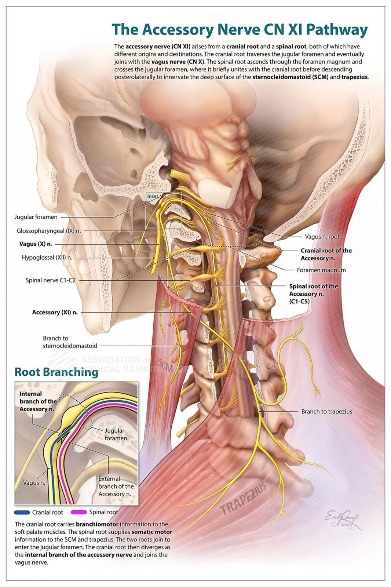

突發性暈眩，又見胸鎖乳突肌：一位體能訓練師的診療紀錄
#突發性暈眩 又是SCM
體態的平衡、肌耐力的訓練與正確動作模式的養成是預防受傷、避免疼痛的最好投資，尤其進入高齡化社會的年代，適當的抗阻力訓練是預防老化的最佳解。因此，體能訓練師，也就是俗稱的健身房教練，就是很重要的存在，透過引導正確發力與肌耐力的訓練，來減少日常生活動作的無形耗損，也讓自己體能與姿態維持在最好的狀態。
但，教練也是會受傷的，甚至身體內存在許多內傷。
教練除了平日訓練學員，多數都會再自我訓練，有時候高強度、高頻次的反覆訓練，容易使肌肉、筋膜類的軟組織深藏內傷，加上教練們的身體代償能力比一般人都好，更不容易注意到這類問題，通常都是出現明顯症狀才會尋求醫療處理
今天聯合門診時段，中醫師 薛博文轉來了一位年輕的體能訓練師，幾天前在上課帶學生的時候，示範動作時瞬間發力後，突然開始暈眩，暈到會想吐，合併後腦緊繃脹痛，找了家附近中醫診所吃藥針灸，症狀依舊，一旁就診的家人也因不見症狀改善而面露焦慮。
一番診察後，排除器質性異常可能性後，薛醫師與我都有發現在右側SCM明顯腫脹，進一步鉗捏探找Trp，甚至可以引發、重現出暈眩的症狀，合併肌筋膜脈象寸部滑數、略浮，至此，由症狀表現、觸診與脈診都有高度重疊，已幾乎可以確認是SCM所造成暈眩，便施以乾針針刺治療。
治療過程中，本擔心是否會因為針感過強而心生懼怕，但這位訓練師表示：
「不會，我覺得很舒服😌😌😌」。 （哎唷！
再加上這奇摩子的當下反饋，基本上已對診療有高度把握，針刺SCM引發LTR++++後，原先的暈眩與不適感已當場下降許多，最後再針對對高位頸椎與Erb點(副神經分支)進行徒手鬆解後，完成本次治療。
起身後訓練師表示暈眩感已消失，僅剩下針後的痠脹感，她與家人的神情也都輕鬆許多。
SCM是現代多數上班族與低頭族容易出現代償與緊繃的肌群，耳悶、耳閉、突發性暈眩與頭痛、眼窩脹痛都是SCM內傷後常見的症狀！
而SCM也是由第11對中樞神經-副神經所支配，SCM的修復與副神經分支的手法釋放，對於現代常見的肩頸僵硬、痠痛都有很好的治療效用。
但在治療後，最重要的，還是要在日常保持正確體態與姿勢，並透過有計畫地對肌肉筋膜的訓練，強化肌筋膜平衡與建立正確發力模式，才是避免再次受傷與慢性損耗的最佳策略唷！
#好久沒發診療案例文
#SCM胸鎖乳突肌
#眩暈
太初中醫診所 東門中醫
中醫師 黃彥鈞
